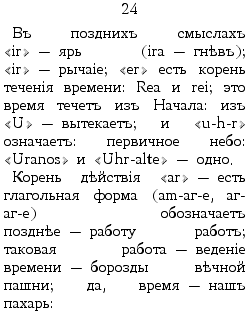
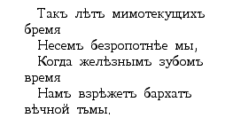
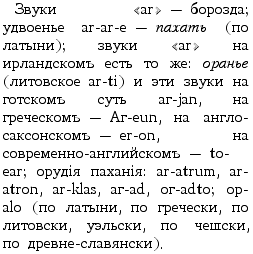
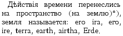

Glossolalia (Section 24)

In later meanings "ir" is -- ire [yar'] (ira -- anger); "ir" is -- a growling; "er" is the root of the temporal flow of time [vremya]: Rea and rei; this is time flowing from the Beginning: it flows out -- from "U"; and "u-h-r" signifies the original sky: "Uranus" and "Uhr-alte" are one.
The root of activity is "ar" -- the verb form (am-ar-e, ar-ar-e) later it signifies -- the labor of labors; such labor is -- the conduct of time -- the furrows of the eternal plowed field; yes, time is -- our ploughman:

Thus the burden of years flowing by
We carry uncomplainingly,
When with its steel tooth time
Cuts open the velvet of darkness eternity.

The sounds "ar" are -- a furrow; the duplication ar-ar-e is -- to plow (in Latin); the sounds "ar" in Irish are the same: Russian oranye [plowing] (Lithuanian ar-ti) and these sounds in Gothic are ar-jan, in Greek -- aroun, in Anglo-Saxon -- er-jan, in contemporary English -- to-ear; the instruments of plowing: ara-trum, aro-tron, arkla-s, arad, or-adto, (o)r-alo (in Latin, in Greek, in Lithuanian, Welsh, in Czech, in Old Slavonic).

The actions of time were carried onto space (onto the earth)* the earth is called: era, ira, ero, ire, terra, earth, airtha, Erde.